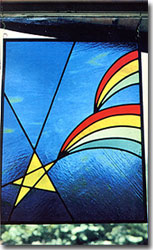

Photos by the Author
The completed panel will brighten any window in your home or make a cherished gift for a friend. What's more, with experience you may find that your enjoyable craft can turn into a full-fledged home business!